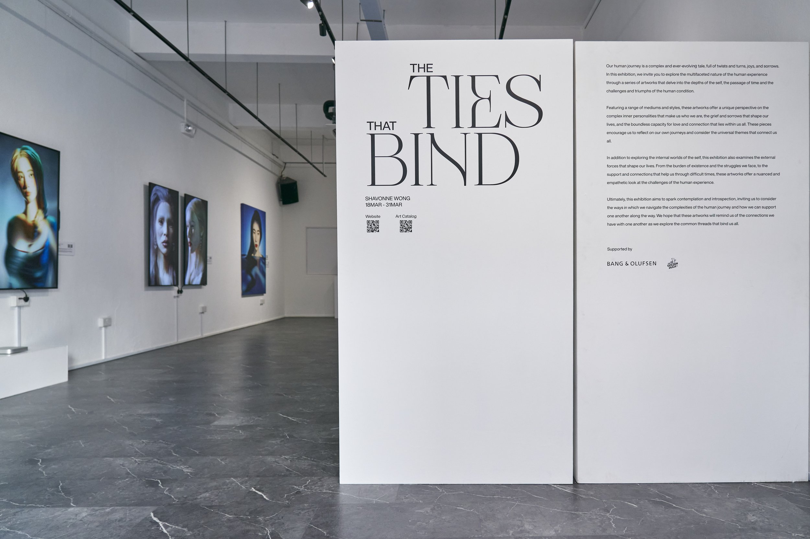

The Ties That Bind
Interactive 3D bodies and dynamic digital artwork.
View projectThis body of single-channel works marks Shavonne Wong's move from photography into fully constructed 3D image-making. Across portraits, bodies, reflective skins, flowers, animals, mythic figures, and synthetic surfaces, the works ask what happens when a person is no longer photographed but built. They hold the intimacy of portraiture while shifting the body into a digital material: glossy, fragile, theatrical, and mutable.
45 works
For acquisitions: studio@shavonnewong.art
For loans and exhibition inquiries: studio@shavonnewong.art